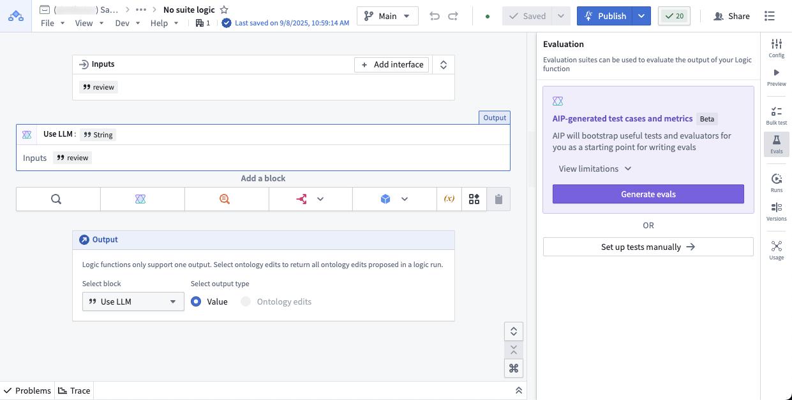
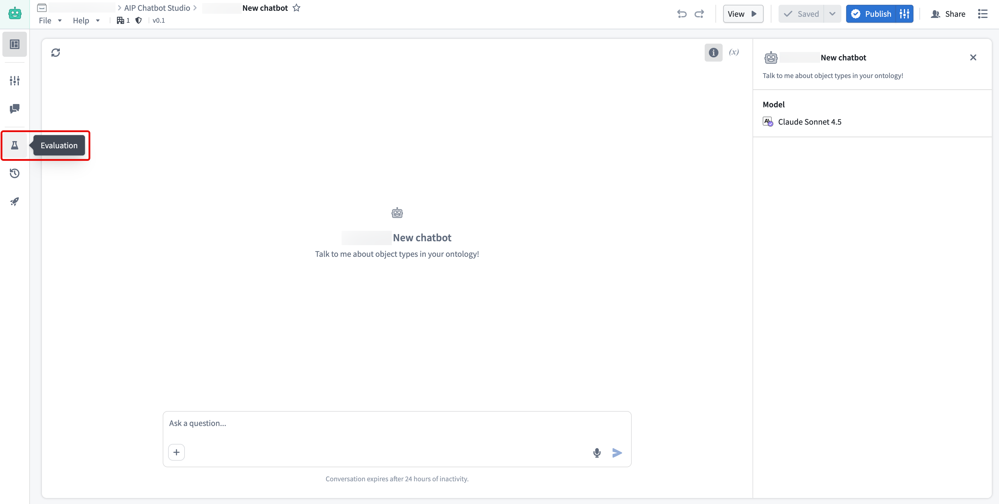
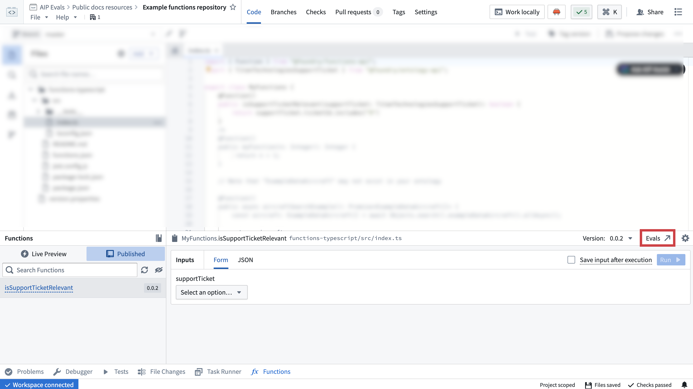
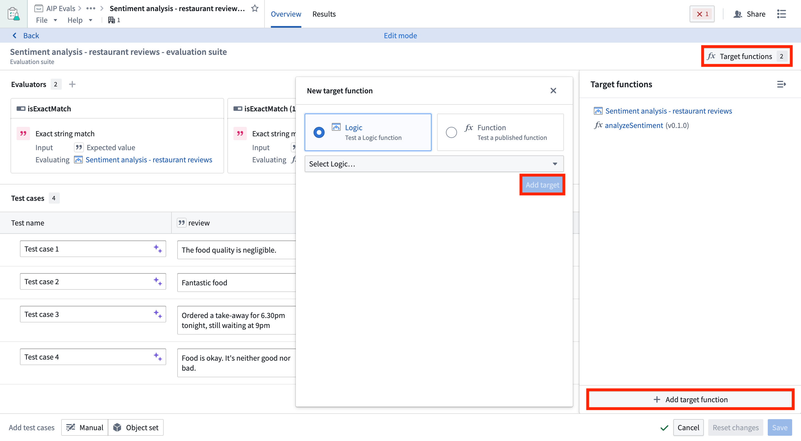
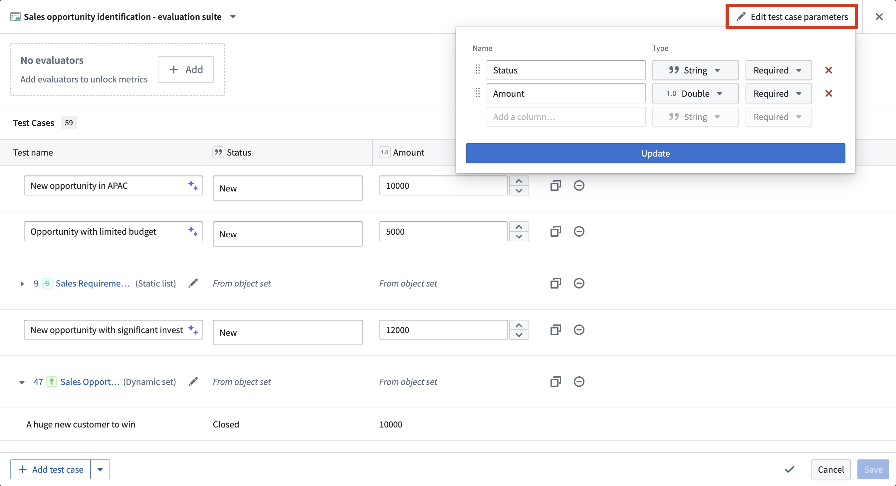
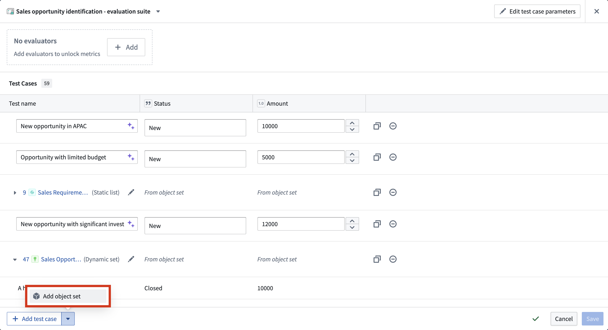
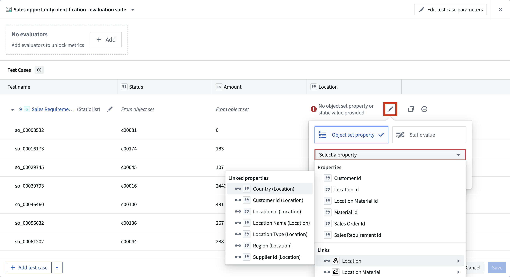
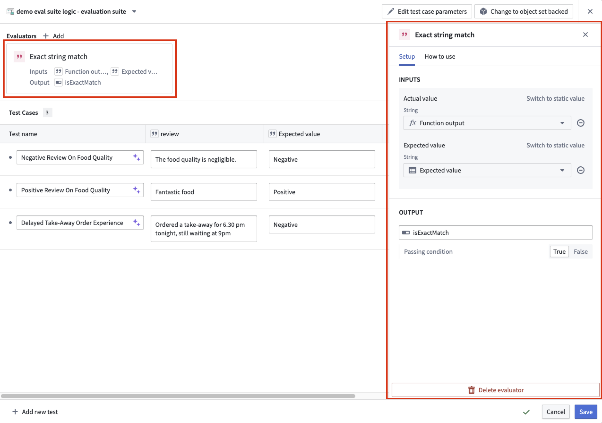
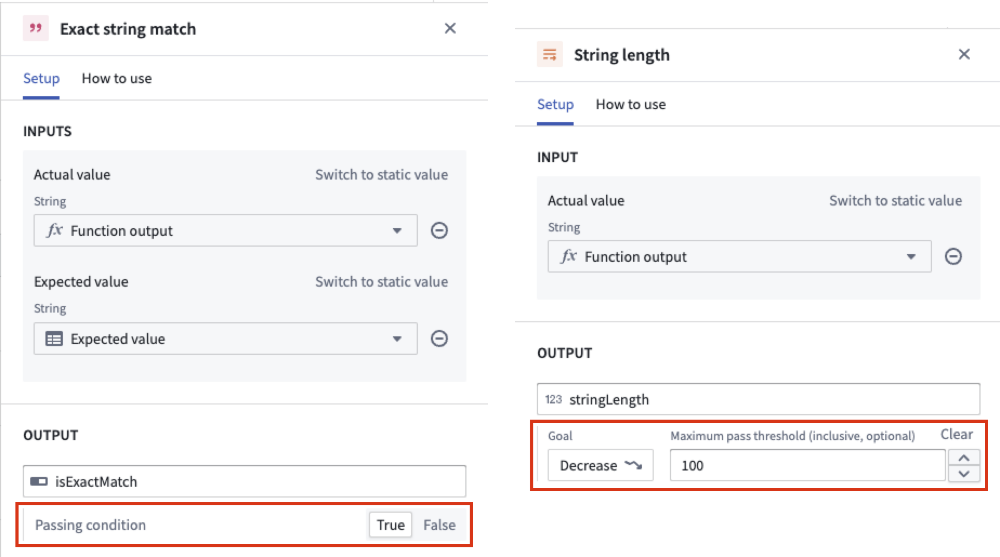

An evaluation suite is a collection of test cases and evaluation functions used to benchmark a target function's performance. Running an evaluation suite will execute the target function for each test case and use the evaluation methods associated with the suite.
You can create evaluation suites for target functions such as AIP Logic functions, AIP Chatbot functions, and code-authored functions:
AIP Logic functions: To get started with evaluation suites in AIP Logic, refer to evaluation suites for Logic functions.

AIP Chatbot functions: To test an AIP Chatbot function, you need to publish your chatbot as a function first. Then you can create evaluation suites from the Evaluation tab in the left sidebar. For more information, you can follow the evaluation suites for Logic functions section due to the similarity of the sidebar.

Code-authored functions: You can create and open evaluation suites for functions authored in Code Repositories directly from the Published tab by navigating to Code Repositories > Code > Functions > Published.

You can add additional target functions to test multiple functions with the same evaluation suite. This allows you to run evaluations against different published Foundry functions or Logic functions at once. It is useful for comparing performance across implementations or evaluating similar functions on the same test cases.
To add target functions, open your evaluation suite in AIP Evals and select Add target function. Each target function can have different input/output signatures, and evaluators are configured per target.

When you have multiple targets configured, you can choose which targets to include when running your evaluation suite.
You can create test cases for an evaluation suite by manually defining individual test cases, using an object set to generate multiple test cases, or combining both approaches within the same suite. This flexibility allows you to leverage existing object sets while also adding specific manual test cases as needed.
You can edit evaluation suite columns by selecting Edit test case parameters. Then, you can add, remove, or reorder test case columns and their respective types.

To manually define a test case, select Add test case in the bottom left of the evaluation suite view. Give each test case a name, then define the input(s) and their expected values in the appropriate columns. You can select the purple AIP star icon next to the test case name to generate a suggested name.
In this example, the suggested name of Negative Review On Food Quality adds more information than Test case 1:

Manual test cases are ideal for testing specific edge cases, scenarios that may not be well-represented in your object sets, or when you want precise control over test inputs and expected outputs.
You can also add test cases from an object set, where each test case will be represented by an object from the selected object set. To add object set test cases, select Add object set and choose the object set and the object properties that you want to use in the object set selection dialog.

Object set test cases are particularly useful for testing at scale with real data, ensuring your function works across a representative sample of your actual data. You can add multiple object sets to the same evaluation suite and combine them with manual test cases to create comprehensive test coverage.

Backing object sets can be edited in the configuration dialog by selecting the Edit object set configuration icon. Properties can also be edited individually using the object set header columns.
Object sets can be configured to provide different types of data to the evaluation suite columns. These include the following:
An evaluator is a method used to evaluate the output of a tested function against expected outputs. An evaluator may return a simple true/false result, but can also produce numeric values such as a semantic distance. An evaluation suite without evaluators is useful for executing functions in multiple scenarios and manually reviewing each output. However, evaluators make it possible to measure and objectify run results at scale, since they produce comparable performance indicators.
AIP Evals provides some built-in evaluators that will be described in the following section. You can also define custom evaluation functions to measure performance based on specific criteria.
To add an evaluator, select + Add at the top of the test case table. This will open a selection panel where you can choose from a list of built-in evaluators or custom evaluators.
Once you chose an evaluator and select + Add, the evaluator will be added to your test case table. You can then configure the evaluator by mapping the function output to the Actual value column and the expected value to the Expected value column in your test case table.

When configuring an evaluator, you can define an objective for each metric. For Boolean metrics, specify whether the metric should be true or false. For numeric metrics, set the direction of optimization; specify either a maximize (higher values are better) or minimize (lower values are better) objective. You may also define a threshold value:
A metric in a test case iteration is considered a pass if it meets the configured objective. For Boolean metrics, this is whether the metric is true or false. For numeric metrics, this is whether the metric is above or below the threshold, if defined. A test case iteration as a whole is considered a pass if all metrics meet the configured objective. A test case with multiple iterations is considered a pass if all iterations pass.

Examples of built-in evaluation functions include:
Date and Timestamp values are supported.true when the condition is satisfied, otherwise false. Accepts any type except reference types (object locators, object RIDs, object sets, or models) as the actual value. Requires a condition parameter written as a clear, verifiable assertion and an available model for evaluation.precision, recall, and f-measure, each on a 0-1 scale where a higher score indicates closer match to the target.Custom evaluation functions allow you to select previously published functions. These can be functions on objects written in Code Repositories or other AIP Logic functions. Custom evaluation functions must return at least one Boolean or numeric type as a metric. They may also return string values, which appear as debug outputs in the debug view for diagnostic purposes. One evaluation function may also return multiple metrics by returning a struct consisting of Boolean or numeric types.
After creating an evaluation suite, learn more about evaluation suite run configurations.